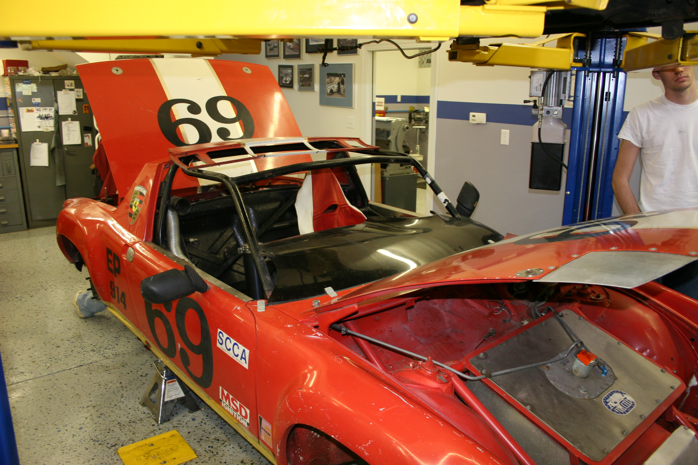
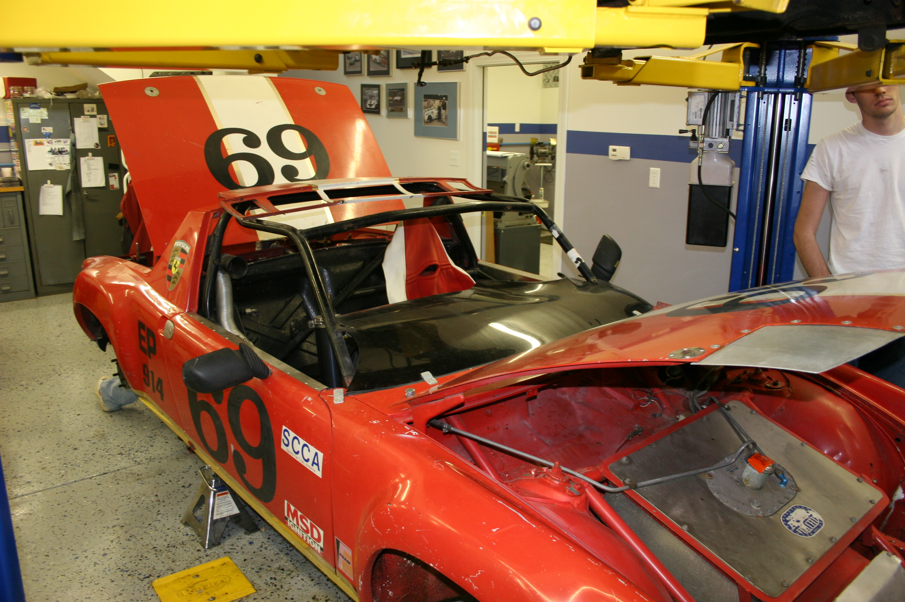

Team Rose Motorsports began back in 1978 when GM donated a brand new Buick Regal to Rose-Hulman. The club was called Rose-Hulman Racing back then and focused on modifying the Buick for drag racing. Members were able to extract more than 500 horsepower from its turbo V6. You can read more about our Buick Regal here.
Beginning in the mid 80s, Rose-Hulman Racing switched focus to the SAE Mini-Baja competition. They built small off-road carts powered by a competition-standard Briggs & Stratton engine. This format didn’t last long, however, and the team picked up Formula SAE in 1987.
A much more rigorous program, Formula SAE demanded that clubs build cart-style racers that were judged on their production potential as an amateur weekend racer. RHR continued competing in FSAE through 1992 but a lack of continued interest and dwindling membership caused the Student Government Association to revoke its club status shortly thereafter.
In the fall of 2000, a group of mechanically-minded students worked to revise RSR’s format. By the following year, Team Rose Motorsports was an official club again. Our first car was a 1985 Mazda RX-7 that raced in SCCA Solo II autocrosses. It stayed with the club for exactly ten years before it was replaced by the BMW. You can read more about the RX-7 here.

The RX-7
Team Rose Motorsports acquired our second car in the fall of 2002. Hoping to expand past just autocross, we bought a 1984 Ford Mustang for use at the drag strip. Having gone through many different iterations of competition and performance, the Mustang is still with the club today. Visit our Mustang page for more info.
In the Spring of 2005, two TRM members drove to New Jersey to pick up a dragster and trailer for the club. After 1,527 miles and a flat tire, Team Rose Motorsports had a new project. Due to the cost of licensing drivers, the dragster was sold in 2008. You can read more about our dragster here.
At the end of 2007 a Porsche 914 was donated to the club. Converted in the 80s to a dedicated racer and neglected in a barn for more than a decade, TRM worked to restore it to working condition. Initially conceived as a turbocharged E85 autocrosser, it remained stationary for years before its air-cooled Volkswagen engine ran again. All these years later, it is finally moving closer to that initial conception. Check out our Porsche page for more.
During the summer of 2011 following the loss of the RX-7, Team Rose Motorsports purchased an E30 BMW 325is and returned to having a three-car stable. It was supposed to remain a stock “beginner” autocross car, but after three years of extreme reliability the club decided that it should be more fun. The story continues on our BMW page.